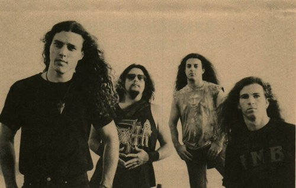

Death metal is an extreme subgenre of heavy metal music. It typically employs heavily distorted and low-tuned guitars, played with techniques such as palm muting and tremolo picking; deep growling vocals; aggressive, powerful drumming, featuring double kick and blast beat techniques; minor keys or atonality; abrupt tempo, key, and time signature changes; and chromatic chord progressions. The lyrical themes of death metal may include slasher film-style violence, political conflict, religion, nature, philosophy, true crime, and science fiction. Building from the musical structure of thrash metal and early black metal, death metal emerged during the mid-1980s. Bands such as Venom, Celtic Frost, Slayer, and Kreator were important influences on the genre's creation.
Celtic Frost
Possessed, Death, Necrophagia, Obituary, Autopsy, and Morbid Angel are often considered pioneers of the genre. In the late 1980s and early 1990s, death metal gained more media attention as a popular genre. Niche record labels like Combat, Earache, and Roadrunner began to sign death metal bands at a rapid rate. Since then, death metal has diversified, spawning several subgenres. Melodic death metal combines death metal elements with those of the new wave of British heavy metal. Technical death metal is a complex style, with uncommon time signatures, atypical rhythms, and unusual harmonies and melodies. Death-doom combines the deep growled vocals and double-kick drumming of death metal with the slow tempos and melancholic atmosphere of doom metal. Deathgrind, goregrind, and pornogrind mix the complexity of death metal with the intensity, speed, and brevity of grindcore. Deathcore combines death metal with metalcore traits. Death 'n' roll combines death metal's growled vocals and highly distorted, detuned guitar riffs with elements of 1970s hard rock and heavy metal. The setup most frequently used within the death metal genre is two guitarists, a bass player, a vocalist, and a drummer often using "hyper double-bass blast beats". Although this is the standard setup, bands have been known to occasionally incorporate other instruments such as electronic keyboards. The genre is often identified by fast, heavily distorted and low-tuned guitars, played with techniques such as palm muting and tremolo picking. The percussion is usually aggressive and powerful.
Death
Death metal is known for its abrupt tempo, key, and time signature changes. It may include chromatic chord progressions and a varied song structure. In some circumstances, the style will incorporate melodic riffs and harmonies for effect. This incorporation of melody and harmonious playing was even further used in the creation of melodic death metal. These compositions tend to emphasize an ongoing development of themes and motifs.